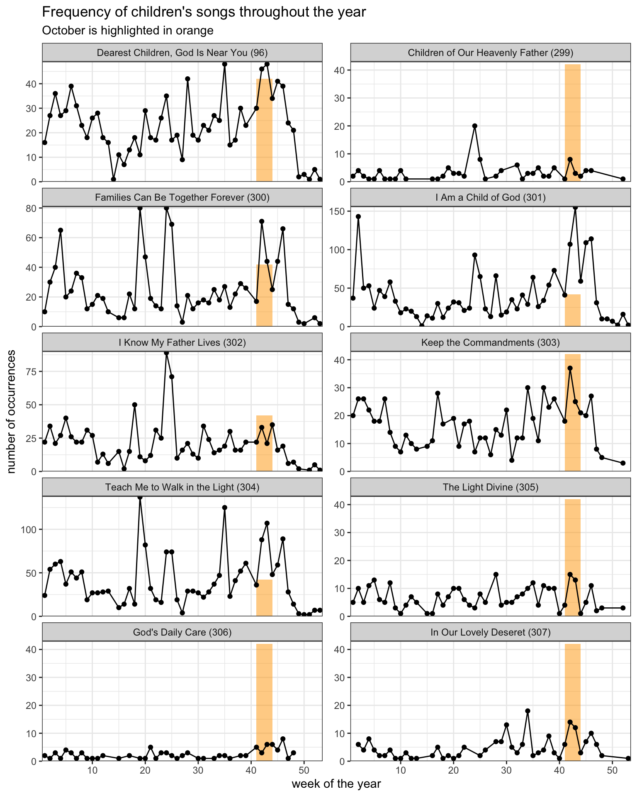

| Hymn | Wards that sang it in October |
|---|---|
| I Am a Child of God (301) | 4.490% |
| Teach Me to Walk in the Light (304) | 3.460% |
| Come, Follow Me (116) | 3.270% |
| Redeemer of Israel (6) | 2.790% |
| How Firm a Foundation (85) | 2.740% |
| Lord, I Would Follow Thee (220) | 2.710% |
| Amazing Grace (1010) | 2.710% |
| Now Let Us Rejoice (3) | 2.700% |
| More Holiness Give Me (131) | 2.670% |
| I Believe in Christ (134) | 2.660% |
What hymns are sung in October as a result of the Primary Program?
frequency
holidays
October is peak Primary Program season. According to the Handbook, the “Children’s Sacrament Meeting Presentation” is held annually “during the last few months of the year.” The wards I’ve been in typically do it in October or late September. So, since we’re approaching the end of October, I thought I’d take a look at what congregational hymns are sung around this time of year, likely as a result of the Primary Program. It’s a little difficult to see what hymns are sung the most in October, because we have several other things going on, including General Conference and a Fast Sunday. So, if we ignore those for now, we can start to see what hymns emerge as being the most autumnal hymn.
The following table shows the top ten most common hymns sung in October, excluding sacrament hymns and General Conference–related hymns. The numbers are not huge—it’s not like we’re seeing a very obvious trend going on across the church. But, it is probably not a coincidence that
But, raw frequency doesn’t tell the whole story. You can see on this list that the other eight of the top ten most common hymns in October are hymns that are common throughout the year. In other words, of course
So, as a way to control for how popular a hymn is overall, I’ve done a different calculation that accounts for how much the hymn is sung within a particular range compared to not within a range.
CautionTechnical details for nerds :)
Take
For comparison,
However, sample size affects these calculations. The hymn that actually has the highest October-to-not-October ratio is
The solution I came up with was to do count how many times hymn was sung in October and not October, count up all the other data I have, and \(\chi^2\) on the two. So, in the case of
| Hymn 301 | All other hymns | |
|---|---|---|
| October | 71 | 5,142 |
| Not October | 313 | 58,292 |
A \(\chi^2\) test on this table shows that there is an association between October and Hymn 301 (\(\chi^2\) = 53.48, df = 1, p < -0.001). So, after calculating the October-to-not-October ratio for all hymns, I then ran a \(\chi^2\) test on each one to see which differences were statistically significant.
But, you can’t just go around making hundreds of comparisons without the chance of a bunch of false positives. Assuming an \(\alpha\) level of 0.95, we’d expect 5% of the comparisions to appear statistically significant, even though thy’re not. So, a basic solution is to add a Bonferroni correction, which is to divide the base level p-value (0.05) by the number of comparisons being made (in this case, 233, since that’s how many unique hymns were sung in October at some point), producing a new p-value threshold of about 0.000021.
So, the following table shows only those hymns that have a p-value that are smaller than the new corrected threshold.
My understanding is the the Bonferroni correction is critiqued as being too harsh. In this case, it seems to work pretty well.
The following table shows the hymns that are quite a bit more likely to be sung in October than in other months of the year.
| Hymn | Sung in October | Percent of October | Sung not in October | Percent not in October | Times more likely in October |
|---|---|---|---|---|---|
| We Ever Pray for Thee (23) | 61 | 0.26% | 229 | 0.08% | 3.05 |
| Holding Hands Around the World (1011) | 49 | 0.21% | 222 | 0.08% | 2.52 |
| In Our Lovely Deseret (307) | 35 | 0.15% | 168 | 0.06% | 2.38 |
| Be Thou Humble (130) | 176 | 0.75% | 853 | 0.32% | 2.36 |
| Amazing Grace (1010) | 208 | 0.88% | 1015 | 0.38% | 2.34 |
| We Listen to a Prophet’s Voice (22) | 71 | 0.3% | 354 | 0.13% | 2.29 |
| I Am a Child of God (301) | 344 | 1.46% | 1750 | 0.65% | 2.25 |
| Oh, Holy Words of Truth and Love (271) | 55 | 0.23% | 305 | 0.11% | 2.06 |
| This Is the Christ (1017) | 75 | 0.32% | 449 | 0.17% | 1.91 |
| My Shepherd Will Supply My Need (1014) | 91 | 0.39% | 552 | 0.2% | 1.88 |
| More Holiness Give Me (131) | 205 | 0.87% | 1288 | 0.48% | 1.82 |
| God’s Gracious Love (1013) | 76 | 0.32% | 496 | 0.18% | 1.75 |
| Come, Listen to a Prophet’s Voice (21) | 143 | 0.61% | 937 | 0.35% | 1.74 |
| When the Savior Comes Again (1002) | 67 | 0.28% | 443 | 0.16% | 1.73 |
| Where Can I Turn for Peace? (129) | 188 | 0.8% | 1266 | 0.47% | 1.70 |
| Teach Me to Walk in the Light (304) | 265 | 1.12% | 1787 | 0.66% | 1.70 |
| The Iron Rod (274) | 166 | 0.7% | 1159 | 0.43% | 1.64 |
| Hope of Israel (259) | 131 | 0.56% | 933 | 0.35% | 1.61 |
| Israel, Israel, God Is Calling (7) | 180 | 0.76% | 1282 | 0.48% | 1.61 |
| Keep the Commandments (303) | 91 | 0.39% | 672 | 0.25% | 1.55 |
| Dearest Children, God Is Near You (96) | 139 | 0.59% | 1028 | 0.38% | 1.55 |
| Families Can Be Together Forever (300) | 150 | 0.64% | 1119 | 0.42% | 1.53 |
| Come, Ye Children of the Lord (58) | 201 | 0.85% | 1558 | 0.58% | 1.47 |
| Rejoice, the Lord Is King! (66) | 167 | 0.71% | 1308 | 0.49% | 1.46 |
| Come, Follow Me (116) | 251 | 1.06% | 1967 | 0.73% | 1.46 |
| As Now We Take the Sacrament (169) | 420 | 1.78% | 3946 | 1.46% | 1.22 |
As you can see
For what it’s worth, there are other children’s hymns that are more common in October, but didn’t make the cut because they’re more common during other months.
Dearest Children, God Is Near You (#96) ,In Our Lovely Deseret (#307), and Keep the Commandments (#303) are common in October, as well as September. So, they have a little more broad usage. Families Can Be Together Forever (#300) ,Teach Me to Walk in the Light (#304) , andI Know My Father Lives (#302) have slight spikes in October, but they’re overshadowed by their currency around Mother’s Day and/or Father’s Day, which will be the topic of a later post.- Other children’s hymns like
The Light Divine (#305) andGod’s Daily Care (#306) don’t really seem to be more common in the fall than in other times of the year.
The following plot shows these select children’s hymns and how often they were sung throughout the year.

So, other
Halloween?
Out of curiosity, I checked to see if there were any hymns sung more around Halloween. I think there’s a joke that goes around that hymns like